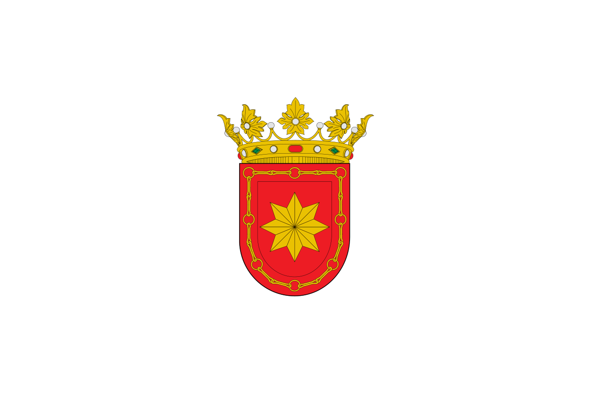

Biografía de Joaquín Erviti Lazcano

Joaquín Erviti Lazcano nació en Estella (Navarra) el 12 de octubre de 1912. Creció en el seno de una familia de profunda fe cristiana en las tierras navarras.
A los 15 años sintió la vocación religiosa e ingresó a las Escuelas Pías en Peralta de la Sal (Huesca), lugar de nacimiento de San José de Calasanz. Realizó allí su noviciado y formación espiritual.
Fue ordenado sacerdote en el año 1936. Tras su ordenación, fue destinado al Colegio Calasanz de las Escuelas Pías en Pamplona, donde dedicó más de 60 años ininterrumpidos a la educación infantil (casi 40 de ellos al frente de los parvulitos). Por sus aulas pasaron miles de niños, siendo conocido popularmente en toda la ciudad como el maestro "de media Pamplona".
Tras una vida íntegramente entregada a Dios y a los niños, falleció cristianamente en Pamplona el 21 de marzo de 1999.
- 12 de octubre de 1912: Nace en Estella, Navarra.
- 1927: Ingresa a la Orden Escolapia en Peralta de la Sal a los 15 años.
- 1936: Es ordenado sacerdote.
- 1934 - 1999: Labor educadora y sacerdotal en el Colegio Calasanz de Pamplona.
- 21 de marzo de 1999: Fallece en Pamplona con fama de santidad.